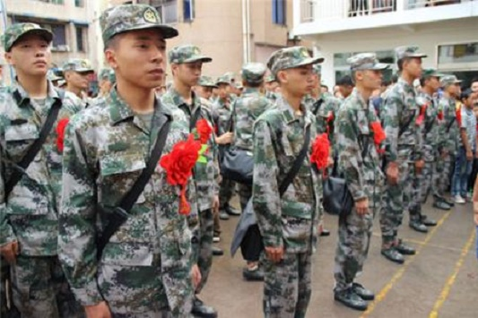
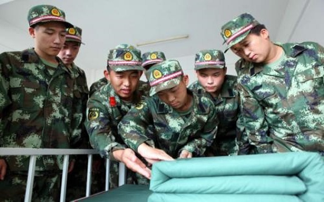
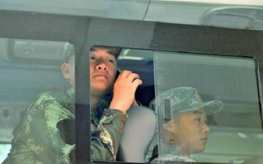

我的新兵时光
点击返回导航
第一次入伍，身挂大红花，离开家乡，登上南去的铁皮，去开启一段新的征程。

列队集合，整齐划一。行如风站如松，在为期两个多月的新兵训练中渐渐有了军人的模样。

有棱有角的被子,折射出军人行事果断，不畏艰险的生活作风。日复一日的叠被子，是对使命的服从。
还记得第一次摸枪的兴奋吗？从班长手里接过有着自己名字的95，你是否也感到责任？

虽然有时候也会想家，也会想妈妈，还有心中的那个人。只愿岁月化作一首歌，军中绿花送给他。